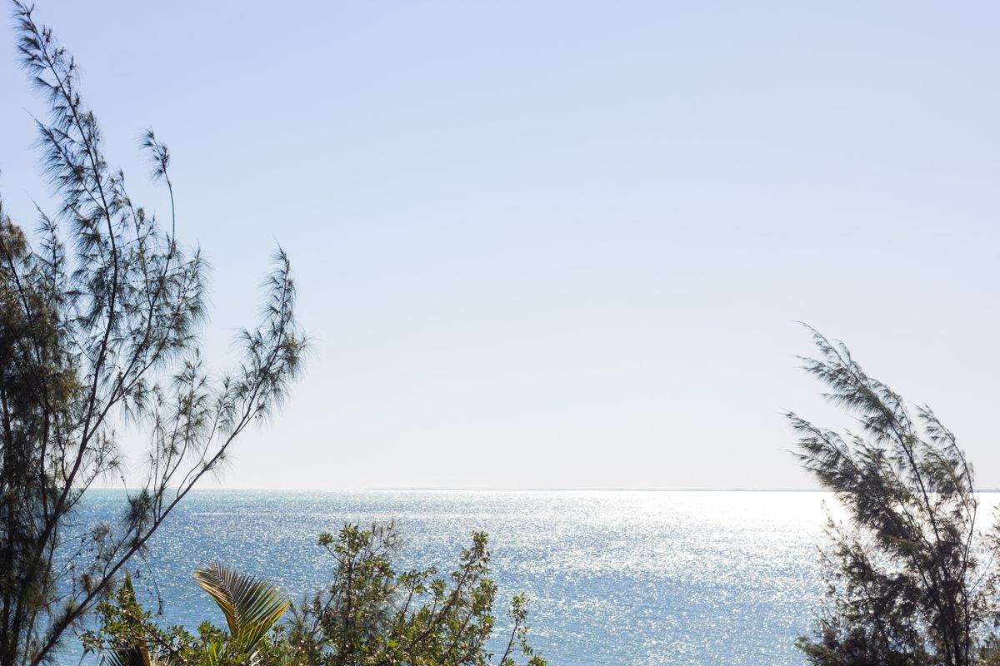

GetYourGuide
Pour certaines expériences avec des prestataires soumis aux licences et autorisations requises. Chaque activité sera sélectionnée pour le voyage.
Découvrir ↗Sisi in Africa · Madagascar · Tuléar
La mer, la pirogue et le plaisir de vivre Madagascar loin de la foule.
Voir le programme
Chez Lulu · Mer · PirogueHuit temps forts pour imaginer le séjour, quelle que soit sa durée. Leur ordre et leur contenu seront confirmés avant toute réservation.
Point de rencontre à l’aéroport convenu avant de rejoindre Tuléar.
Transfert, installation et apéritif d’accueil pour faire connaissance.
Sortie en mer envisagée selon les conditions locales et le programme confirmé.
Échanges et découvertes au fil des rencontres locales.
Atelier autour de tes aspirations et de tes prochains élans.
Artisanat, vie locale et temps pour apprécier le lieu à son rythme.
Temps de plage, bien-être et trois soirées conviviales au fil du séjour.
Cercle de clôture, derniers instants au bord de l’eau et transfert vers l’aéroport.
Cette liste est prévisionnelle ; rien n’est encore ouvert à la réservation pour ce voyage.
La chambre partagée n’est jamais imposée. Elle peut aider à garder un tarif accessible si tu la choisis. Une option de chambre individuelle est prévue pour chaque voyage ; son supplément éventuel et sa disponibilité seront précisés avant inscription.
Ces éléments ne sont pas encore fixés dans cette maquette ; aucun prix ni prestation supplémentaire n’est promis ici.
Trois partenaires peuvent faciliter la préparation du séjour. Leurs services restent facultatifs et se choisissent selon tes besoins.
Pour certaines expériences avec des prestataires soumis aux licences et autorisations requises. Chaque activité sera sélectionnée pour le voyage.
Découvrir ↗Une solution pour payer et gérer les devises à l’étranger avec souplesse. Les frais et limites dépendent de ton abonnement et du moment du change.
Découvrir ↗Une eSIM pour rester connectée en voyage. Vérifie la couverture de la destination, le forfait et la compatibilité de ton téléphone.
Découvrir ↗